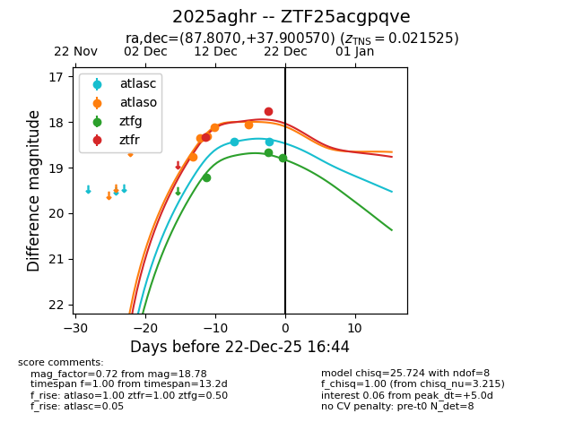
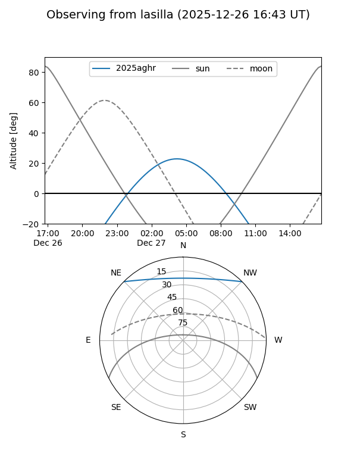
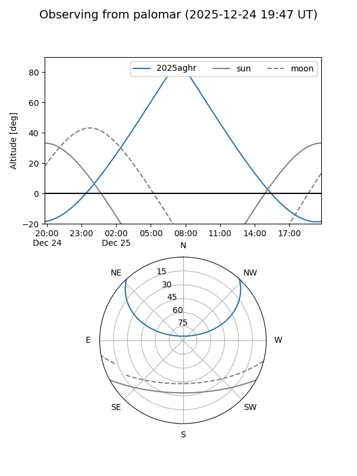
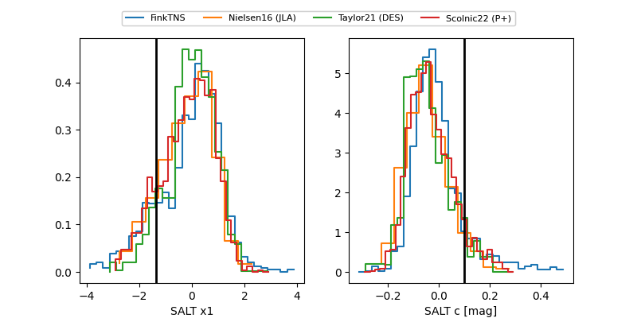

2025aghr
Target 2025aghr at 2025-12-31 18:00
Aliases and brokers:
FINK: link
Lasair: link
ALeRCE: link
TNS: link
YSE: link
alt names
ZTF25acgpqve (ztf,fink_ztf)
2025aghr (tns,yse)
Coordinates:
equatorial (ra, dec) = 87.8070,+37.90057
equatorial (HMS+DMS) = 05:51:13.69,+37:54:02.05
galactic (l, b) = (172.8984,+5.60823)
Flags:
confirmed ia
Photometry:
last atlasc=18.88, atlaso=18.39, ztfg=18.78, ztfr=18.35
5 atlasc, 6 atlaso, 3 ztfg, 4 ztfr detections
Lightcurve

Visibility


Additional plots
